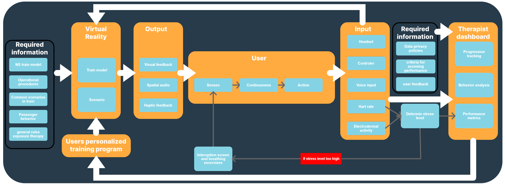

The Dual-Perspective Architecture.
To ensure the user never goes through therapy alone, we designed a dual-perspective system architecture that supports two opposite states of mind simultaneously: a highly stressed employee inside the headset and a calm specialist at the dashboard.
While Levels 1 to 3 allow for independent user autonomy in calm settings, Levels 4 to 7 unlock live dashboard overrides. This allows the attending therapist to manually tweak intensity parameters in real time to match the user's specific trauma triggers.

To accommodate these opposite structural needs, the layout splits into two distinct interfaces:
1. The In-Headset Menu: Designed to keep cognitive load as low as possible during moments of high anxiety, we stripped away all text blocks and complex submenus in favor of massive touch targets, ultra-clean spacing, and absolute visual stillness.
2. The Therapist Dashboard: Operating as a clinical mission control, it displays a live stream of the user’s line of sight alongside real-time heart-rate telemetry lines. With a single click, the specialist can lower the situational intensity, pause the simulation, or open a direct audio line to guide the employee through grounding protocols.